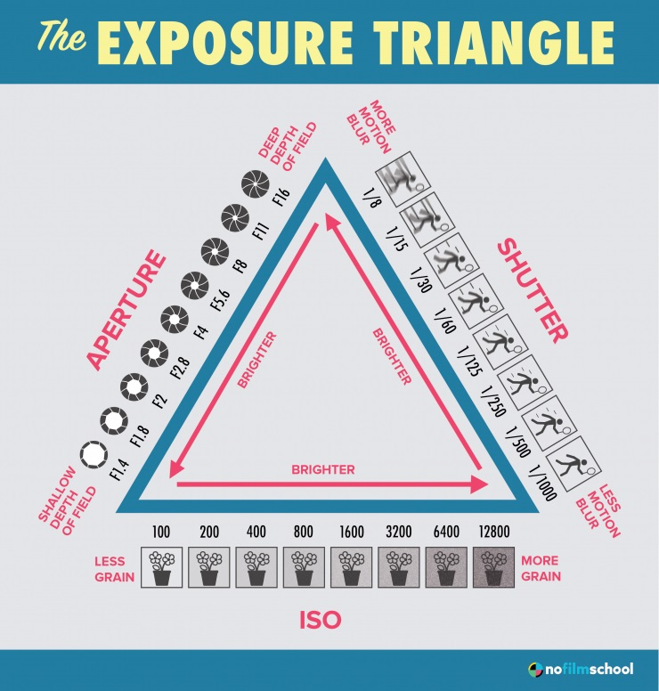

The process of how a film captures an image lies in visible light. Film is made of plastic and silver grains.
These silver grains, when exposed to light (when the shutter opens) darken, creating what are known as negatives of images.
Negatives are inversions of color or black and white (depending on the type of film you are using).
So, if you take a photo outside when the sun is shining the negative will be dark and vice versa if you take a picture at night, the negative will come out light.
The tricky part with film (and digital) is getting the right exposure.
Meaning you have to manipulate the settings that you can control to produce a balanced photo.
Your best reference would be the
exposure triangle.

Digital cameras function in a similar way to film cameras. The biggest difference is instead of the light making film react.
The light or rather what you are seeing through the viewfinder is hitting an electronic sensor in the camera which breaks up the image into pixels.
The sensor is measuring the color and brightness of each pixel and turning it into numbers.
These numbers contain the details of each pixel it contains, making up the entire photo.
There are common issues.
that all photographers face from time to time and can differ with each medium.
With film it is very easy to make all kinds of mistakes especially as a beginner. (I unfortunately know from experience).
With digital, mistakes are just as easy to make but they are easier to fix because you are
able to experiment more and take many more photos than what you would be able with a film camera.
Although overexposing is the worst for digital because you would lose information in the highlights and other bright parts of the photo.
And there is not a good way to recover that information. Same goes for when you underexpose and pictures come out too dark.
There is not a very good way to recover that part of the photo again.
Although a tip to keep in mind regarding overexposure and underexposure:
Overexpose a little when you are using film and underexpose a little when using digital.
The reason you can overexpose when using film is because it can be redeemed in the film development process by pulling.
And underexposing in digital you can edit the photo in photoshop by adjusting the highlights.